Sistema de planificación fotográfica · Lima · San Isidro
Planifica 10 tomas con tu Canon 6D
Seis rutas por Lima con diagramas a escala de campo visual, zona nítida, ángulo y pose,
y ajustes de exposición calculados para la luz de día, tarde y noche. Para 35mm, 50mm, 85mm y zoom 35–80mm, con persona o con perro.
Investiga 87 lugares y escenas con laboratorios de perspectiva y luz, una comparación transparente, rutas a pie por distrito y un protocolo de campo que funciona sin conexión.
Focal es cuánto de la escena entra en el encuadre; PDC (profundidad de campo) es cuánto queda nítido delante y detrás del foco. ISO amplifica la señal y también puede añadir grano.
Qué vas a hacer
Elige un plan, mira el dibujo, prueba una sola variable y haz una foto de comprobación. Primero mueve la cámara; después decide la focal. Lee la tarjeta de campo antes de salir.
Si algo falla
Si una ruta no abre, usa la lista de paradas y confirma el cruce en campo. Si una foto no sale, revisa movimiento, foco, luz y bordes por separado; no cambies todo a la vez.
Más palabras útiles
Histograma: gráfico que muestra cuánta luz hay en cada tono. KML y GeoJSON: archivos para llevar puntos y líneas a una app de mapas. Son ayudas de planificación, no pruebas de que el lugar esté abierto.
Empezar en 5 minutos
Guía de inicio rápido
Si es tu primera vez, sigue estos 5 pasos.
1
Elige un plan
6 opciones: El Olivar, Malecón, San Isidro nocturno, Centro Histórico, Casa / Laboratorio y Abtao/Distrito Financiero.
Selector superior: ☀️ Día, 🌅 Tarde o 🌙 Noche. Los ajustes, el filtro ND y la luz prevista cambian con la hora.
4
Estudia el diagrama
Cada toma muestra: posición de cámara, campo de visión, profundidad de campo, distancia, ángulo y pose.
5
Lleva la tarjeta de campo
con todas las técnicas, reglas y ajustes. Llévala al campo.
💡
Flujo recomendado para tu primera sesión:
Empieza con Plan A (Parque El Olivar) en modo 👤 Humano + ☀️ Día. Es la combinación más accesible: locación cercana, luz predecible, y 10 tomas que cubren todas las técnicas. Si tienes tu perro, cambia el toggle a 🐶 Perro y prueba las mismas tomas con poses caninas.
Especificaciones verificadas
El equipo de los planes
Los planes, la tarjeta de campo y los laboratorios están resueltos para una Canon EOS 6D con estos cuatro lentes. La apertura máxima del lente es una capacidad; la apertura recomendada cambia según la toma. Si usas otra cámara u otros lentes, configúralos debajo.
35mm
EF 35mm f/2 IS USM
Campo visual: horizontal ≈54.2° · V ≈37.7° · IS.
Máx: f/2
Enfoque mínimo: 0.24 m
Filtro: 67 mm
Rol: contexto · capas · noche
50mm
EF 50mm f/1.8 STM
Campo visual: horizontal ≈39.4° · V ≈26.9°.
Máx: f/1.8
Enfoque mínimo: 0.35 m
Filtro: 49 mm
Rol: barrido · retrato ambiental
85mm
EF 85mm f/1.8 USM
Campo visual: horizontal ≈23.8° · V ≈16.0°.
Máx: f/1.8
Enfoque mínimo: 0.85 m
Filtro: 58 mm
Rol: aislamiento · acción distante
35–80mm
EF 35–80mm f/4–5.6 III
Campo visual: horizontal ≈54.2° @35 → 25.2° @80.
Máx: f/4–5.6
Enfoque mínimo: 0.40 m
Filtro: 52 mm
Rol: efecto zoom · encuadre flexible
¿Otra cámara u otros lentes?
Elige tu equipo y cada toma mostrará también el ajuste equivalente para él: el mismo encuadre, la misma zona nítida en proporción a la distancia y la misma exposición, conservando lo que crea el efecto. Se guarda en este dispositivo.
Laboratorio óptico · geometría dinámica
Decide por resultado; comprueba la geometría
La focal, apertura, distancia de enfoque y separación del fondo influyen en la profundidad de campo. Este laboratorio separa medidas geométricas calculadas de una previsualización pedagógica del desenfoque.
MODELO ÓPTICO EN VIVOPlano de enfoque
85 mmf/1.8
Visualización en escala logarítmica: las líneas comparan campo de visión y profundidad de campo. La PDC es un umbral, no un borde físico, y el gráfico es una guía de relación, no una medición de tu cámara en ese instante.
Campo visualPDC aceptableDesenfoque > CoCFocoFondo
Previsualización conceptual
DISCO DE DESENFOQUE ESTIMADO
—
Modelo de lente delgada; no simula bokeh, aberraciones, luz ni exposición.
A/B · POSICIÓN Y PERSPECTIVA
1 · ELIGE LA INTENCIÓN
2 · AJUSTA UNA VARIABLE
Campo visual horizontal
Ancho a foco
Nítido de → a
PDC total
Frente / detrás
Hiperfocal
Exposición: —
Cómo leer y qué no promete
Campo visual y ancho: geometría del sensor de 35.8 mm de ancho y focal seleccionada.
Límites cercano y lejano, hiperfocal: lente delgada con círculo de confusión de 0.030 mm, una convención de planificación; la nitidez cae continuamente, no salta en esos límites.
Capa violeta: comienza donde el disco calculado supera el CoC y crece con la magnitud del desenfoque hacia el fondo.
Bokeh: los discos enseñan cantidad de desenfoque, no la estética real, que depende también del diseño óptico, aberraciones y diafragma.
Luz/exposición: EV, apertura, obturador e ISO calculan desviación tonal; luz, obturador e ISO no mueven la PDC geométrica.
Perspectiva: sólo cambia al mover la cámara. Cambiar focal desde el mismo punto cambia encuadre.
Sujeto:
Hora:
Se calcula en tu dispositivo · funciona sin conexión
Luz en Lima para tu fecha
Hora dorada: el sol está entre 6° sobre el horizonte y 4° bajo él. Hora azul: entre 4° y 6° bajo el horizonte. Ecuaciones solares de NOAA para San Isidro (UTC−5, sin horario de verano). La garúa puede apagar el color aunque el sol esté en hora.
6 planes alternativos
Elige tu plan de sesión
Cada plan cubre las 10 tomas. Cambia la hora (día, tarde o noche) y el sujeto (persona o perro) con los selectores superiores; los ajustes de cada tarjeta se recalculan para esa luz.
8 técnicas
Las 8 técnicas de las 10 tomas
De mucha profundidad de campo al efecto zoom: cada técnica explicada con su fundamento óptico y los ajustes recomendados.
Laboratorio de movimiento
El obturador dibuja tiempo
Compara cómo cambia la huella temporal al variar velocidad, movimiento y seguimiento. Es un estimador pedagógico de tendencia, no un exposímetro ni una simulación óptica pixel-perfect.
EFECTO
—huella relativa
—riesgo de trepidación
—referencia
8 reglas
Reglas de composición
Cada toma aplica una regla específica. Aquí la guía visual ilustrada de las 8 que vas a practicar.
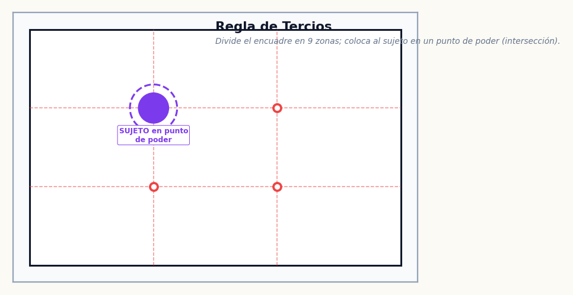
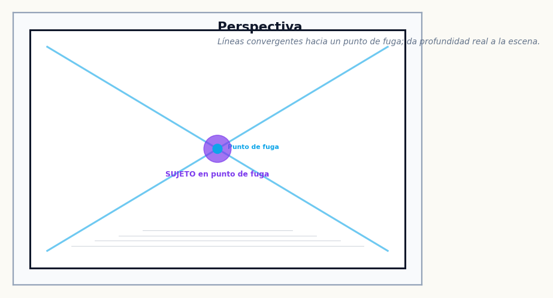
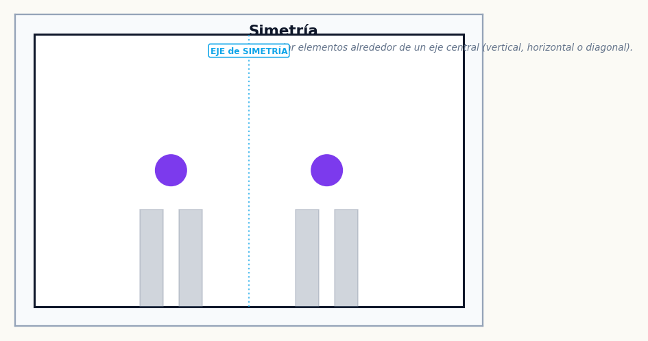
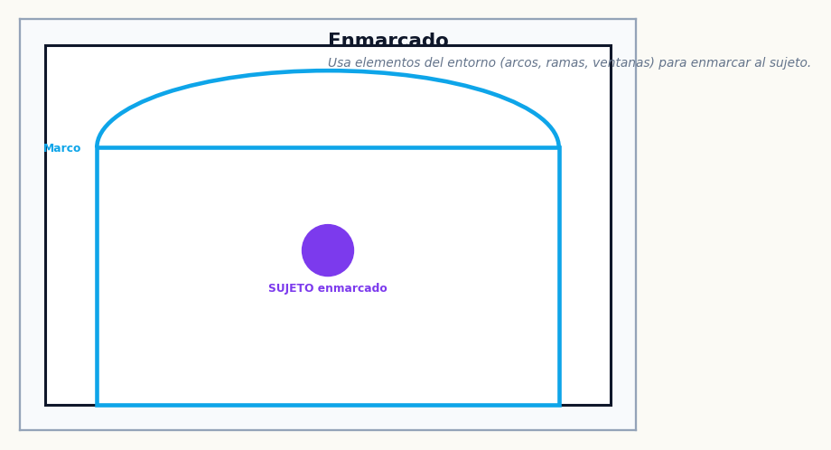
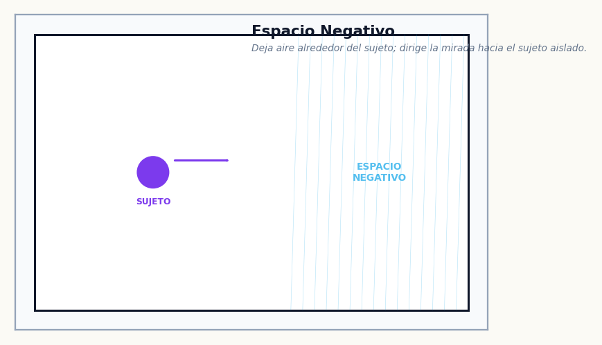
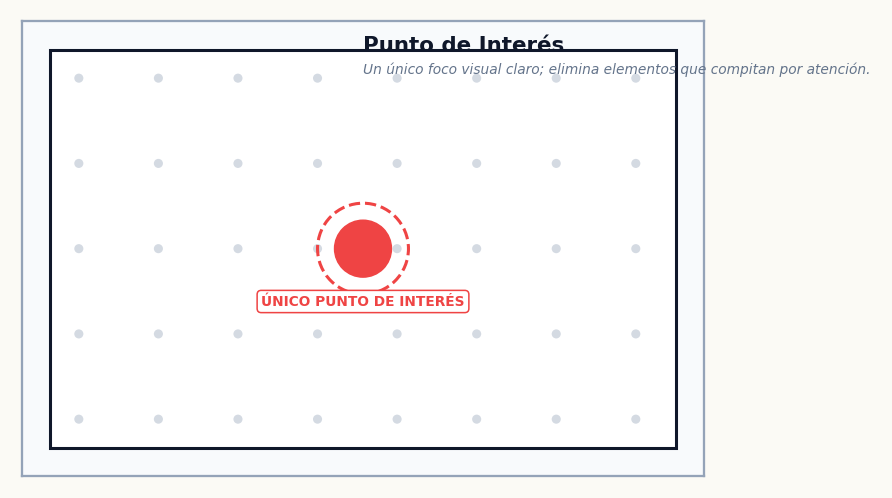
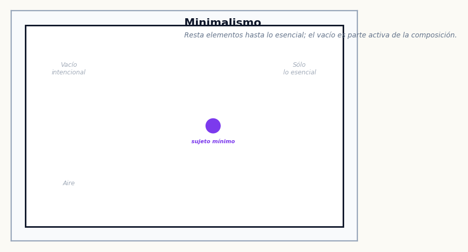
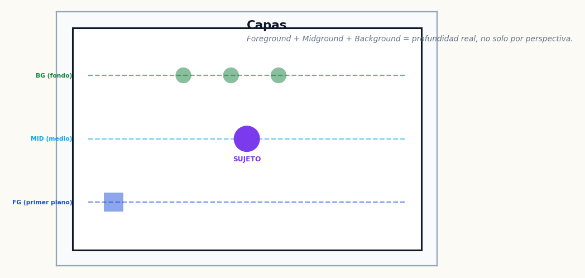
Laboratorio de composición
Mueve el sujeto y prueba la intención
Toca o arrastra dentro del encuadre 3:2 y activa las guías. El objetivo no es “obedecer reglas”, sino ver cómo cambian balance, tensión, dirección y espacio negativo.
espacio negativo
GUÍAS
POSICIÓN
66%, 67%
LECTURA
Tercio inferior derecho
Prueba primero un tercio; luego centra el sujeto y enciende simetría. Si la imagen mejora al centrar, la simetría está sirviendo mejor que la regla de tercios.
6 ángulos
Ángulos de cámara
Central, picado, contrapicado, nadir, cenital y plano holandés — efectos narrativos de cada uno.
Pedagogía visual
Comparativa de lentes
La misma cámara, la misma distancia al sujeto — solo cambia el lente. Mira cómo cambian el campo de visión, el encuadre y el desenfoque.
Distancia corta: 2.5m (retrato 3/4)
A 2,5 m el 35mm da un retrato ambiental con contexto; el 50mm, un plano medio natural; el 85mm, un primer plano de cabeza y hombros.
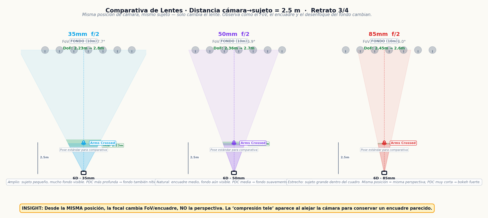
Distancia media: 4 m (plano medio + entorno)
A 4 m el 35mm permite cuerpo entero con fondo; el 50mm aísla más al sujeto; el 85mm encuadra sólo el torso y, a f/1.8, deja el fondo muy desenfocado.
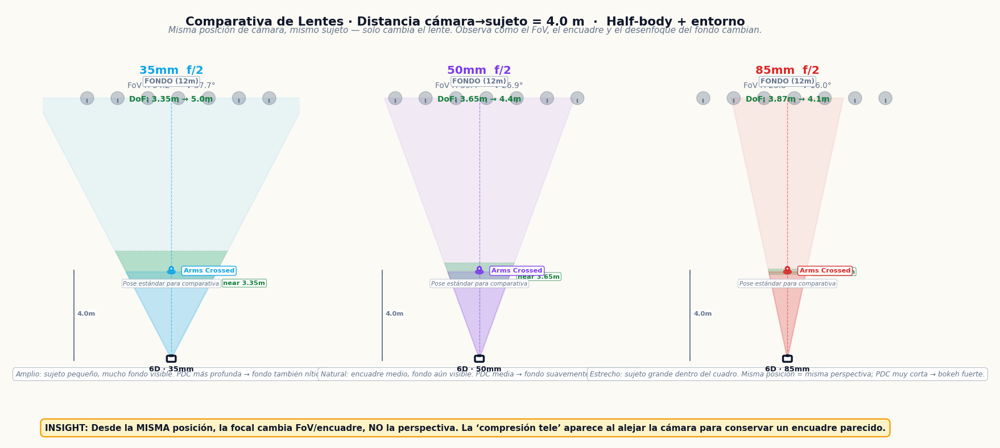
Distancia larga: 6 m (cuerpo entero ambiental)
A 6 m, desde el MISMO punto, el 35mm da un plano amplio, el 50mm uno más cerrado y el 85mm un encuadre mucho más estrecho. La perspectiva geométrica no cambia hasta que mueves la cámara.
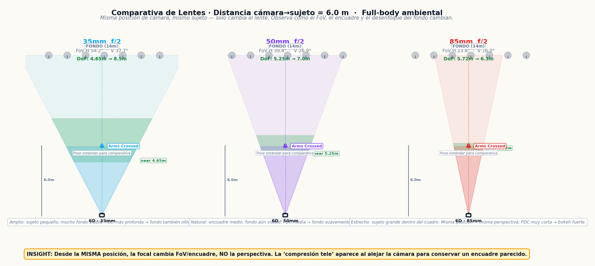
Claves
Campo visual: en horizontal el 35mm ve 54°, el 50mm 39° y el 85mm 24°; el 85mm abarca ≈2/5 del ancho que ve el 35mm.
Perspectiva: desde la MISMA posición de cámara, cambiar focal cambia el encuadre, no la relación geométrica entre sujeto y fondo. La “compresión tele” aparece cuando te alejas para conservar un encuadre similar.
PDC comparada con justicia: a 2,5 m y f/2 en los tres → 35mm ≈62 cm, 50mm ≈30 cm, 85mm ≈10 cm (CoC 0,03 mm; aproximación de planificación).
Rostro/perspectiva: la apariencia “estirada” al acercarte con 35mm viene sobre todo de la corta distancia de cámara. Para un retrato más tranquilo, retrocede y reencuadra con 50/85mm.
Guía de poses
Guía de poses · qué hacer con el cuerpo y por qué
Elige una familia de pose y úsala como indicación para la toma con persona: qué hace el cuerpo, dónde va la cámara y qué error evitar.
INDICACIÓN
Curva en S
Retrato 3/4
CUERPO
CÁMARA / COMPOSICIÓN
ERROR TÍPICO
La biblioteca PoseArt reúne muchas más variaciones; aquí sólo están las familias que sirven directamente a las 10 tomas.
Pedagogía
Cómo razonar cada toma
La lente, la distancia y el fondo determinan el resultado. Aprende el porqué de cada decisión.
1
Distancia cámara ↔ sujeto
La posición/distancia de cámara determina la perspectiva: cambia la relación aparente entre nariz, orejas, sujeto y fondo. La focal cambia el campo visual y el tamaño en el encuadre. Si eliges 85mm y retrocedes para conservar el mismo encuadre, es ese retroceso el que produce la apariencia más “comprimida”.
35mm · 4m
Cuerpo entero + entorno (cubre ≈4,1 × 2,7 m). Fondo visible.
50mm · 3m
Plano medio a cuerpo entero (cubre ≈2,2 × 1,4 m).
85mm · 2.5m
Busto (cubre ≈1,1 × 0,7 m); fondo muy desenfocado a f/1.8.
2
Distancia sujeto ↔ fondo
El desenfoque del fondo depende de TRES factores: apertura (f/), distancia cámara-sujeto (más cerca = más desenfoque), y distancia sujeto-fondo (más lejos el fondo = más desenfoque). Para poca PDC: lente abierto (f/1.8), sujeto cerca (2-3m), fondo lejos (8m+).
Ejemplo: 85mm a f/1.8, sujeto a 2.5m, fondo a 12m → PDC de planificación ≈9cm. El ojo más cercano queda nítido, el otro ya borroso, y el fondo se convierte en mancha de color uniforme.
3
El lente entra en la ecuación
Cada lente tiene una distancia focal que determina su campo de visión y magnificación. Un 35mm ve ≈54.2° horizontal; un 85mm ≈23.8°. Desde el mismo lugar la perspectiva no cambia; para mantener el MISMO encuadre con 85mm debes alejarte, y ese cambio de posición modifica la perspectiva.
35mm = historia + entorno
Para mucha PDC, capas y contexto: el sujeto y su mundo.
85mm = aislamiento + retrato
Para poca PDC, bokeh, separación del sujeto del fondo.
4
Velocidad y movimiento
El tiempo de exposición determina cómo se captura el movimiento. Usa la tarjeta de campo como punto de partida: 1/2000s congelado; 1/40s barrido (prueba 1/60→1/40→1/30); 1s fantasma; 10s pintura con luz; 5–15s larga exposición; 2s efecto zoom. Los planes pueden variar con la luz y explican por qué.
1/2000s
congelado
1/40s
barrido
1s
fantasma
10s
pintura con luz
5
Ángulo de cámara = narrativa
La altura y el ángulo de la cámara comunican emociones. Central (1.55m, 0°): neutral, igualdad. Picado (más alto, -20°): el sujeto se ve menor, vulnerable. Contrapicado (más bajo, +20°): agranda, heroico, dominante. Nadir: cámara debajo mirando 90° hacia ARRIBA. Cenital: cámara arriba mirando 90° hacia ABAJO. No son intercambiables.
6
Composición = jerarquía visual
La regla aplicada dirige el ojo del espectador. Tercios: equilibrio dinámico. Simetría: orden, calma. Perspectiva: profundidad. Enmarcado: foco al sujeto. Espacio negativo: aislamiento, respiración. Capas: profundidad real con primer plano, plano medio y fondo.
Metodología
Fuentes y supuestos
Prioridad a documentación Canon; cálculos ópticos con sensor 35.8×23.9mm y CoC 0.03mm como convención de planificación, no frontera física de nitidez.
Canon 6D · los ajustes exactos de cada toma para la luz en la que estás
Luz en Lima
☀ Día —
🌇 Tarde —
🌙 Noche —
Con JavaScript verás la hora de cada luz para hoy. Día: del amanecer a una hora antes de la puesta. Tarde: la última hora de sol y la hora azul. Noche: desde que termina la hora azul.
Tomas
Plan A · Parque El Olivar — Bosque Histórico Parque El Olivar, San Isidro (Av. La Encalada / Calle La Colonia)
Plan B · Malecón de Miraflores — Costa Verde Malecón Cisneros / Parque del Amor, Miraflores
Plan C · San Isidro Nocturno — Interior + Calle Urbana Interior controlado + exteriores públicos seguros de San Isidro
Plan D · Centro Histórico — Plaza San Martín & Jirón de la Unión Plaza San Martín, Jirón de la Unión, Plaza Mayor (Centro de Lima)
Plan E · Casa / Laboratorio — Control total Interior controlado + ventana o retiro privado seguro
Plan F · Abtao / Distrito Financiero — Urbano Local Parque Combate de Abtao + ejes peatonales/arquitectura del distrito financiero de San Isidro
Marca cada toma sólo después de revisarla al 100 %. Los valores son los del plan para esa luz.
▤A01 · Mucha Profundidad de Campo · Capas
35 mmf/11 · 1/125 · ISO 400
Sombra abierta o nublado denso · EV 12
Mañana: luz lateral cálida filtrada por los olivos. Si el cielo entra en cuadro, compensa -0.3 EV para no quemarlo.
35 mmf/11 · 1/125 · ISO 400
Sombra abierta o nublado denso · EV 12
Tarde: sol bajo, sombras largas. Cuidado con sombras duras en el rostro.
35 mmf/8 · 1/30 · ISO 6400
Parque o monumento con faroles · EV 3 a 5
Noche: faroles del parque. ISO 6400 es utilizable en la 6D; apoya la cámara en un muro bajo para sostener 1/30 s.
Sujeto a 4 m · fondo a 12 m · cámara a 1,55 m de altura
Persona: Modelo 3/4, cuerpo girado 45° hacia la luz, manos relajadas
Perro: Perro sentado atendiendo un snack en tu mano, mirada fija hacia la cámara
Qué hacer y qué evitar
Dispara en modo Av con f/11, enfoque al sujeto, deja que la cámara elija velocidad
Usa un trípode para evitar trepidación si la velocidad baja de 1/100
Equilibra el horizonte con la regla de tercios vertical
No uses 35mm a f/2 — perderías las capas del fondo, clave de esta composición
No coloques al sujeto pegado al fondo (necesitas separación para que las capas se distingan)
▤A02 · Mucha Profundidad de Campo · Simetría
35–80 mm a 35 mmf/8 · 1/125 · ISO 200
Sombra abierta o nublado denso · EV 12
Mañana: buena luz, busca alineación solar perfecta para sombras simétricas.
35–80 mm a 35 mmf/8 · 1/125 · ISO 200
Sombra abierta o nublado denso · EV 12
Tarde: sombras largas pueden romper la simetría; dispara cuando el sol está alto.
35–80 mm a 35 mmf/8 · 1/30 · ISO 6400
Parque o monumento con faroles · EV 3 a 5
Noche: faroles simétricos. Apoya la cámara o usa trípode; si el sujeto puede quedarse quieto, baja a 1/8 s e ISO 1600.
Sujeto a 6 m · fondo a 20 m · cámara a 1,65 m de altura
Persona: Modelo de pie, brazos cruzados, simetría frontal
Noche: ISO 3200 a 1/125 s sostiene a un sujeto que camina; con trípode y sujeto quieto, baja a ISO 800.
Sujeto a 8 m · fondo a 100 m · cámara a 1,7 m de altura
Persona: Modela caminando lentamente, mirada al frente
Perro: Perro caminando olfateando por la ciclovía
Qué hacer y qué evitar
Espera un momento sin peatones cruzando
Mantén el horizonte perfectamente horizontal
Subexponer -0.7 EV para preservar detalle del cielo
No incrustes al sujeto contra el horizonte (se pierde la cabeza)
No uses f/5.6 — la PDC no será suficiente para mantener nítido el horizonte
◎B03 · Poca Profundidad de Campo · Punto de interés
85 mmf/2 · 1/4000 · ISO 100
Sol velado · EV 14
Mañana: sol fuerte, usa sombra natural.
85 mmf/1.8 · 1/1600 · ISO 100
Sol bajo, antes del ocaso · EV 12 a 14
Tarde dorada: luz cálida, ideal.
85 mmf/1.8 · 1/125 · ISO 200
Calle iluminada de noche · EV 7 a 8
Noche: retrato junto a un farol. Ajusta el balance de blancos a unos 3200 K.
Sujeto a 2,5 m · fondo a 15 m · cámara a 1,55 m de altura
Persona: Modela riendo, gesto natural
Perro: Perro con cabeza ladeada, ojos fijos
Qué hacer y qué evitar
Enfoca con punto central + recomposición suave (sin mover la distancia)
Dispara en ráfaga para capturar el pico de la sonrisa
Si hay sol directo: usa un reflector o sombra natural
No uses 85mm a f/8 — matas el bokeh del mar
No dispares contraluz sin reflector o flash de relleno
◎B04 · Poca Profundidad de Campo · Enmarcado
50 mmf/2 · 1/4000 · ISO 100
Sol velado · EV 14
Mañana: sol lateral ilumina el marco y el sujeto por igual.
50 mmf/1.8 · 1/1600 · ISO 100
Sol bajo, antes del ocaso · EV 12 a 14
Tarde: luz dorada, el marco se ve más cálido.
50 mmf/1.8 · 1/125 · ISO 200
Calle iluminada de noche · EV 7 a 8
Noche: con farol detrás del marco, efecto contraluz.
Sujeto a 3 m · fondo a 8 m · cámara a 1,4 m de altura
Persona: Modela con pose S-curve, palmera enmarca
Perro: Perro echado, murete del malecón lo enmarca
Qué hacer y qué evitar
Encuentra un marco asimétrico (palmera a izquierda, no centrada)
El marco debe ocupar 1/5 del encuadre, no más
Equilibra la luz: si el marco está oscuro y el sujeto iluminado, perfecto
No uses un marco que tape al sujeto (la palmera debe enmarcar, no ocultar)
No dispares a f/4 — el marco saldrá demasiado nítido y competirá
❄B05 · Efecto Congelado · Regla de tercios
85 mmf/4 · 1/4000 · ISO 400
Sol velado · EV 14
Mañana: sol velado; 1/4000 s a f/4 deja margen de enfoque para seguir la vela.
85 mmf/2.8 · 1/2000 · ISO 100
Sol bajo, antes del ocaso · EV 12 a 14
Tarde: luz dorada sobre las velas.
85 mmf/2.8 · 1/1250 · ISO 6400
No viable con esta luz
Calle iluminada de noche · EV 7 a 8
Noche: no viable; de noche no vuelan parapentes.
Sujeto a 15 m · fondo a 200 m · cámara a 1,65 m de altura
Persona: Atleta/corredor en movimiento, mismo principio
Perro: Perro saltando a atrapar frisbee (si no hay parapente) — equivalente en concepto
Qué hacer y qué evitar
AF AI SERVO + punto central + ráfaga
Pre-enfoca en la zona por donde pasan los parapentes
Dispara en JPG+RAW, descarta los no nítidos
No uses 1/500 — el parapente saldrá blando
No abras a f/1.8 sin necesidad: el AF AI SERVO acierta más con algo de margen de foco
→B06 · Efecto Barrido · Regla de tercios
50 mmf/13 · 1/30 · ISO 125
ND4 · 2 pasos
Sol velado · EV 14
Mañana: con sol velado, 1/30 s pide f/13 y un ND de 2 pasos; si no tienes el filtro, pasa a ISO 100, f/18 y 1/60 s y acepta menos arrastre.
50 mmf/16 · 1/30 · ISO 100
Sol bajo, antes del ocaso · EV 12 a 14
Tarde dorada: f/16 sin filtro; las estelas salen más cálidas.
50 mmf/4 · 1/30 · ISO 200
Calle iluminada de noche · EV 7 a 8
Noche: faroles del malecón; 1/30 s a f/4 e ISO 200.
Sujeto a 8 m · fondo a 50 m · cámara a 1,1 m de altura
Persona: Ciclista o corredor pasando
Perro: Perro corriendo horizontal por la ciclovía
Qué hacer y qué evitar
Posiciónate donde los ciclistas pasan predeciblemente
Gira el torso: prepárate → dispara → continúa el giro 1 s más
Punto AF central + AF AI SERVO + ráfaga
No pares el giro al disparar
No uses 1/250 — congela todo
◌B07 · Efecto Fantasma · Enmarcado
35 mmf/8 · 3"2 · ISO 125
ND1000 · 10 pasosTrípode · retardo de 2 s
Sol velado · EV 14
Mañana: 3 s con sol velado exigen un ND de 10 pasos.
35 mmf/16 · 3"2 · ISO 100
ND64 · 6 pasosTrípode · retardo de 2 s
Sol bajo, antes del ocaso · EV 12 a 14
Tarde: antes del ocaso aún hace falta un ND de 6 pasos; en la hora azul ya no.
35 mmf/8 · 3"2 · ISO 100
ND8 · 3 pasosTrípode · retardo de 2 s
Calle iluminada de noche · EV 7 a 8
Noche: los faroles todavía dan luz de sobra para 3 s; usa un ND de 3 pasos o, si no tienes el filtro, f/16 y 1 s (el fantasma dura menos).
Sujeto a 4 m · fondo a 20 m · cámara a 1,8 m de altura · picado
Persona: Modela sentada pensando, peatones fantasmas detrás
Perro: Perro fuera de esta toma; usa una persona como sujeto móvil controlado.
Qué hacer y qué evitar
Trípode obligatorio
Pide al sujeto: respira suave, no te muevas
Toma 5-6 versiones para elegir el mejor fantasma
No muevas la cámara
No dispares con viento fuerte — el pelo sale movido
✦B08 · Pintura con luz · Minimalismo
35 mmf/22 · Bulb 60" · ISO 100
Trípode · retardo de 2 sNo viable con esta luz
Sol velado · EV 14
No viable de día: la luz ambiente taparía el trazo. Hazla de noche.
35 mmf/22 · 30" · ISO 100
Trípode · retardo de 2 sNo viable con esta luz
Sol bajo, antes del ocaso · EV 12 a 14
No viable de tarde: pospón a la noche.
35 mmf/10 · 25" · ISO 100
Trípode · retardo de 2 s
Oscuridad sin faroles cercanos · EV -3 a -1
Noche: en la arena, lejos de los faroles del malecón; si el fondo sale gris, cierra a f/13.
Sujeto a 5 m · fondo a 30 m · cámara a 1 m de altura
Persona: Modela con brazos cruzados, asistente traza luz
Perro: Perro sentado en playa, dueño traza luz alrededor
Qué hacer y qué evitar
Baja a la playa con permiso (revisar mareas)
Lleva linterna LED pequeña + guante para no quemar
Sujeto lleva ropa oscura
No apuntes la linterna al lente
No muevas el sujeto entre la iluminación y el final
≈B09 · Larga Exposición · Simetría
35–80 mm a 50 mmf/16 · 20" · ISO 100
ND1000 · 10 pasosTrípode · retardo de 2 s
Sol velado · EV 14
Mañana: 20 s con sol velado exigen un ND de 10 pasos.
35–80 mm a 50 mmf/16 · 20" · ISO 100
ND1000 · 10 pasosTrípode · retardo de 2 s
Sol bajo, antes del ocaso · EV 12 a 14
Tarde: antes del ocaso sigue haciendo falta el ND de 10 pasos.
35–80 mm a 50 mmf/11 · 30" · ISO 100
Trípode · retardo de 2 s
Sólo luces lejanas · EV 2
Noche: sin filtro; 30 s convierten el mar en bruma.
Sujeto a 25 m · fondo a 500 m · cámara a 1,65 m de altura
Persona: Modela caminando por la orilla, fantasma
Perro: Perro fuera de esta toma; prioriza trazas/escena y una posición protegida.
Qué hacer y qué evitar
Trípode en roca firme (no arena suelta)
Disparador remoto o 2 s retardados
Con sol hace falta un ND de 10 pasos (ND1000) para 20 s
No dispares con marea subiendo cerca de ti
No toques la cámara durante la exposición
⇆B10 · Efecto zoom · Punto de interés
35–80 mmf/8 · 3"2 · ISO 125
ND1000 · 10 pasosTrípode · retardo de 2 s
Sol velado · EV 14
Mañana: 3 s con sol velado exigen un ND de 10 pasos.
35–80 mmf/16 · 3"2 · ISO 100
ND64 · 6 pasosTrípode · retardo de 2 s
Sol bajo, antes del ocaso · EV 12 a 14
Tarde: con ND de 6 pasos; la luz cálida tiñe el estallido.
35–80 mmf/8 · 3"2 · ISO 500
Trípode · retardo de 2 s
Sólo luces lejanas · EV 2
Noche: el faro y los faroles crean los rayos; ISO 500 sin filtro.
Sujeto a 6 m · fondo a 50 m · cámara a 1,55 m de altura
Persona: Modela 3/4 al centro, muy quieta
Perro: Perro sentado quieto al centro
Qué hacer y qué evitar
Practica el giro: uniforme, ni muy rápido ni muy lento
Sujeto al centro exacto
Trípode obligatorio
No muevas la cámara mientras haces zoom
No uses tiempos de más de 5 s — el efecto se diluye
▤C01 · Mucha Profundidad de Campo · Capas
35 mmf/11 · 1/125 · ISO 3200
Interior junto a una ventana, de día · EV 8 a 10
Mañana: luz de ventana. A f/11 y 1/125 s hace falta ISO 3200; con trípode y sujeto quieto, baja a 1/15 s e ISO 400.
35 mmf/11 · 1/60 · ISO 6400
Interior de casa con lámparas · EV 5 a 7
Tarde: mezcla de ventana y lámparas; iguala la temperatura de color o apaga una de las dos.
35 mmf/8 · 1/125 · ISO 6400
Interior de casa con lámparas · EV 5 a 7
Noche: sólo lámparas. ISO 6400 a mano, o trípode, 1/8 s e ISO 1600 si el sujeto se queda quieto.
Sujeto a 3,5 m · fondo a 8 m · cámara a 1,55 m de altura
Persona: Modela 3/4 en sofá, mirada directa
Perro: Perro sentado en alfombra, mirando al dueño
Qué hacer y qué evitar
Sube ISO (hasta 6400) antes que bajar de 1/125 s a mano; prioridad a f/11
Usa luz ambiente (no flash directo) para mantener atmósfera
Enciende lámparas cálidas para crear capas de luz
No uses flash directo — mata la atmósfera cálida
No dispares a 1/15 sin trípode — saldrá trepidado
▤C02 · Mucha Profundidad de Campo · Simetría
35–80 mm a 50 mmf/8 · 1/125 · ISO 1600
Interior junto a una ventana, de día · EV 8 a 10
Mañana: la luz lateral de ventana puede romper la simetría.
35–80 mm a 50 mmf/8 · 1/125 · ISO 6400
Interior de casa con lámparas · EV 5 a 7
Tarde: igual, cuidado con sombras laterales.
35–80 mm a 50 mmf/8 · 1/125 · ISO 6400
Interior de casa con lámparas · EV 5 a 7
Noche: lámparas simétricas; con trípode puedes bajar a ISO 1600 y 1/30 s.
Sujeto a 5 m · fondo a 12 m · cámara a 1,65 m de altura
Persona: Modela brazos cruzados al centro
Perro: Perro sentado al centro del pasillo
Qué hacer y qué evitar
Usa nivel del 6D (en LiveView)
Enciende todas las luces simétricas
Si no hay simetría arquitectónica, créala con dos lámparas iguales
No dispares descentrado
No rompas la simetría con un objeto extra en un lado
◎C03 · Poca Profundidad de Campo · Punto de interés
85 mmf/2.5 · 1/160 · ISO 200
Interior junto a una ventana, de día · EV 8 a 10
Mañana: luz natural de ventana frontal.
85 mmf/2 · 1/125 · ISO 400
Interior de casa con lámparas · EV 5 a 7
Tarde: lámpara encendida como acento.
85 mmf/1.8 · 1/125 · ISO 400
Interior de casa con lámparas · EV 5 a 7
Noche: solo la lámpara del fondo + luz suave frontal.
Sujeto a 2,5 m · fondo a 6 m · cámara a 1,55 m de altura
Persona: Modela riendo, lámpara de fondo
Perro: Perro cabeza ladeada, ojos fijos
Qué hacer y qué evitar
Apaga otras luces para que solo la lámpara del fondo destaque
Equilibra con luz suave frontal (ventana o reflector blanco)
Encuentra una lámpara con forma interesante para el bokeh
No uses 85mm a f/8 — matas el bokeh
No dispares con luz frontal dura (flash directo)
◎C04 · Poca Profundidad de Campo · Espacio negativo
50 mmf/2 · 1/125 · ISO 100
Interior junto a una ventana, de día · EV 8 a 10
Mañana: luz de ventana fuerte, contraste alto.
50 mmf/1.8 · 1/125 · ISO 400
Interior de casa con lámparas · EV 5 a 7
Tarde: luces exteriores empiezan a encenderse.
50 mmf/1.8 · 1/125 · ISO 400
Interior de casa con lámparas · EV 5 a 7
Noche: luces de calle + faroles, perfecto.
Sujeto a 2,5 m · fondo a 5 m · cámara a 1,4 m de altura
Persona: Modela girada sobre el hombro hacia la ventana
Perro: Perro de perfil contra ventana iluminada
Qué hacer y qué evitar
Subexpón para preservar las luces de la calle por la ventana
Pide al sujeto que gire solo la cabeza, no el cuerpo
El contraste luz interior/sombra hace el espacio negativo
No llenes el espacio negativo con cuadros o muebles
No dispares frontal — pierde el 'sobre el hombro'
❄C05 · Efecto Congelado · Minimalismo
50 mmf/4 · 1/4000 · ISO 400
Sol velado · EV 14
Mañana: luz natural, 1/4000 s a f/4.
50 mmf/2.8 · 1/2000 · ISO 100
Sol bajo, antes del ocaso · EV 12 a 14
Tarde: sol bajo, contraste alto.
50 mmf/2 · 1/2000 · ISO 3200
No viable con esta luz
Interior de casa con lámparas · EV 5 a 7
Noche: no viable con un solo farol; necesitarías flash. Pospón al día.
Sujeto a 4 m · fondo a 10 m · cámara a 0,5 m de altura · contrapicado
Persona: Modela saltando, brazos arriba
Perro: Perro saltando a atrapar snack
Qué hacer y qué evitar
Usa un farol potente o linterna direccional como luz principal
Pre-enfoca donde saltará el sujeto (MF)
Dispara en ráfaga, captura el pico del salto
No dispares sin luz direccional — saldrá oscuro
No uses 1/500 — saldrá borroso
→C06 · Efecto Barrido · Regla de tercios
50 mmf/16 · 1/125 · ISO 200
Sol velado · EV 14
Mañana: autos rápidos; 1/125 s todavía deja algo de barrido.
50 mmf/11 · 1/60 · ISO 100
Sol bajo, antes del ocaso · EV 12 a 14
Tarde: luz baja; baja a 1/60 s para más arrastre.
50 mmf/4 · 1/30 · ISO 200
Calle iluminada de noche · EV 7 a 8
Noche: faroles crean estelas luminosas preciosas.
Sujeto a 8 m · fondo a 30 m · cámara a 1 m de altura
Persona: Ciclista o auto pasando
Perro: Perro corriendo en vereda (con correa por seguridad)
Qué hacer y qué evitar
Posiciónate en la vereda donde los autos pasan predeciblemente (cruce o semáforo)
Gira el torso siguiendo al auto
Cuidado con tu seguridad: no te bajes de la vereda
De noche no bajes de ISO 200 si eso te obliga a abrir más allá de f/4
No uses 1/250 — congela el auto
◌C07 · Efecto Fantasma · Enmarcado
35 mmf/16 · 4" · ISO 100
ND8 · 3 pasosTrípode · retardo de 2 s
Interior junto a una ventana, de día · EV 8 a 10
Mañana: la sala con luz de ventana aún pide un ND de 3 pasos para 4 s a f/16; o cierra las cortinas a medias.
35 mmf/16 · 4" · ISO 100
Trípode · retardo de 2 s
Interior de casa con lámparas · EV 5 a 7
Tarde: lámparas interiores; 4 s sin filtro.
35 mmf/16 · 4" · ISO 100
Trípode · retardo de 2 s
Interior de casa con lámparas · EV 5 a 7
Noche: con lámparas interiores, ideal.
Sujeto a 4 m · fondo a 12 m · cámara a 1,55 m de altura
Persona: Modela riendo suavemente, fantasma en cabeza
Perro: Perro fuera de esta toma; usa una persona como sujeto móvil controlado.
Qué hacer y qué evitar
Trípode obligatorio
Pide al sujeto: ríe suave, no muevas el cuerpo
Enciende lámparas cálidas para mantener luz ambiente
No dispares sin trípode
No expongas más de 6 s — el fantasma se desvanece
✦C08 · Pintura con luz · Punto de interés
35 mmf/11 · 30" · ISO 100
Trípode · retardo de 2 s
Oscuridad sin faroles cercanos · EV -3 a -1
De día sólo con cortinas opacas y la sala realmente a oscuras; si se filtra luz, pospón a la noche.
35 mmf/11 · 30" · ISO 100
Trípode · retardo de 2 s
Oscuridad sin faroles cercanos · EV -3 a -1
Tarde: igual que de día, sólo si consigues oscuridad total.
35 mmf/11 · 30" · ISO 100
Trípode · retardo de 2 s
Oscuridad sin faroles cercanos · EV -3 a -1
Noche: habitación totalmente a oscuras.
Sujeto a 4 m · fondo a 8 m · cámara a 1,4 m de altura
Persona: Modela brazos cruzados, asistente traza luz
Perro: Perro sentado muy quieto, dueño traza contorno
Qué hacer y qué evitar
Apaga TODAS las luces, hasta el LED del router (cúbrelo)
Sujeto: respira suave, no te muevas 30 s
Lleva guante para no quemarte con la linterna; apágala al cambiar dirección
No apuntes la linterna al lente (flare)
No uses ISO alto — se quema
≈C09 · Larga Exposición · Perspectiva
35–80 mm a 35 mmf/16 · 10" · ISO 160
ND1000 · 10 pasosTrípode · retardo de 2 s
Sol velado · EV 14
Mañana: 10 s con sol velado exigen un ND de 10 pasos.
35–80 mm a 35 mmf/11 · 10" · ISO 100
ND1000 · 10 pasosTrípode · retardo de 2 s
Sol bajo, antes del ocaso · EV 12 a 14
Tarde: antes del ocaso todavía hace falta el ND de 10 pasos.
35–80 mm a 35 mmf/9 · 20" · ISO 100
ND8 · 3 pasosTrípode · retardo de 2 s
Tráfico de noche · EV 5
Noche: 20 s con tráfico piden un ND de 3 pasos; si no tienes el filtro, baja a 3 s y f/11.
Sujeto a 15 m · fondo a 100 m · cámara a 1,65 m de altura
Persona: Modela caminando, fantasma
Perro: Perro fuera de esta toma; prioriza trazas/escena y una posición protegida.
Qué hacer y qué evitar
Trípode en vereda firme (no al borde)
Disparador remoto
Encuadra con la calle desapareciendo en perspectiva
No te muevas durante la exposición
No dispares si hay mucho viento (vibración en trípode)
⇆C10 · Efecto zoom · Capas
35–80 mmf/14 · 3"2 · ISO 100
ND8 · 3 pasosTrípode · retardo de 2 s
Interior junto a una ventana, de día · EV 8 a 10
Mañana: luz de ventana; 3 s a f/14 piden un ND de 3 pasos.
35–80 mmf/16 · 3"2 · ISO 100
Trípode · retardo de 2 s
Interior de casa con lámparas · EV 5 a 7
Tarde: lámparas interiores, 3 s a f/16 sin filtro.
35–80 mmf/11 · 3"2 · ISO 100
Trípode · retardo de 2 s
Interior de casa con lámparas · EV 5 a 7
Noche: lámparas interiores, 3 s a f/11 sin filtro.
Sujeto a 6 m · fondo a 20 m · cámara a 1,55 m de altura
Persona: Modela 3/4 al centro, muy quieta
Perro: Perro sentado al centro, muy quieto
Qué hacer y qué evitar
Practica el giro uniformemente
Sujeto al centro exacto
Trípode obligatorio
No muevas la cámara mientras haces zoom
No uses más de 5 s
▤D01 · Mucha Profundidad de Campo · Perspectiva
35 mmf/11 · 1/125 · ISO 100
Sol velado · EV 14
Mañana: 7-8am luz lateral cálida, menos gente.
35 mmf/11 · 1/125 · ISO 100
Sol bajo, antes del ocaso · EV 12 a 14
Tarde: luz dorada, más gente — espera momentos vacíos.
35 mmf/8 · 1/125 · ISO 3200
Calle iluminada de noche · EV 7 a 8
Noche: faroles del jirón; ISO 3200 a 1/125 s congela a la gente que pasa.
Sujeto a 5 m · fondo a 30 m · cámara a 1,65 m de altura
Persona: Modela caminando por el eje central
Perro: Perro caminando con correa por el jirón
Qué hacer y qué evitar
Encuadra PERFECTAMENTE en el eje central de la calle
Espera un momento sin demasiada gente (temprano)
Subexpón -0.3 EV para preservar luces del cielo al fondo
No dispares descentrado — las líneas no convergerán correctamente
No uses gran angular extremo (24mm) — distorsiona demasiado los balcones
▤D02 · Mucha Profundidad de Campo · Simetría
35–80 mm a 35 mmf/8 · 1/250 · ISO 100
Sol velado · EV 14
Mañana: mejor momento, plaza vacía.
35–80 mm a 35 mmf/8 · 1/125 · ISO 100
Sol bajo, antes del ocaso · EV 12 a 14
Tarde: sombras largas pueden romper simetría.
35–80 mm a 35 mmf/8 · 1/30 · ISO 6400
Parque o monumento con faroles · EV 3 a 5
Noche: monumento iluminado; cuida el balance de blancos y apoya la cámara para 1/30 s.
Sujeto a 8 m · fondo a 25 m · cámara a 1,7 m de altura
Persona: Modela brazos cruzados al centro
Perro: Perro sentado al centro exacto de la plaza
Qué hacer y qué evitar
Usa rejilla de pantalla y nivel electrónico del 6D
Equilibra la luz: si hay sol lateral, espera nube o usa sombra
Verifica simetría en LiveView antes de disparar
No dispares descentrado
No rompas la simetría con peatones asimétricos — espera el momento
◎D03 · Poca Profundidad de Campo · Punto de interés
85 mmf/2 · 1/4000 · ISO 100
Sol velado · EV 14
Mañana: sombra de arco, luz suave.
85 mmf/1.8 · 1/1600 · ISO 100
Sol bajo, antes del ocaso · EV 12 a 14
Tarde dorada: fachada brilla.
85 mmf/1.8 · 1/125 · ISO 1600
Parque o monumento con faroles · EV 3 a 5
Noche: iluminación del monumento; ISO 1600 a f/1.8.
Sujeto a 2,5 m · fondo a 12 m · cámara a 1,55 m de altura
Persona: Modela 3/4, fachada de fondo
Perro: Perro con cabeza ladeada, fachada colonial de fondo
Qué hacer y qué evitar
Enfoca el ojo más cercano con punto central + recomposición suave
Si hay sol directo, busca sombra del arco para luz pareja
Dispara en ráfaga para variaciones de gesto
No uses 85mm a f/8 — matas el bokeh de la fachada
No dispares contraluz sin reflector
◎D04 · Poca Profundidad de Campo · Enmarcado
50 mmf/2 · 1/4000 · ISO 100
Sol velado · EV 14
Mañana: luz lateral del arco, ideal.
50 mmf/1.8 · 1/1600 · ISO 100
Sol bajo, antes del ocaso · EV 12 a 14
Tarde dorada: arco cálido, sujeto iluminado.
50 mmf/1.8 · 1/125 · ISO 1600
Parque o monumento con faroles · EV 3 a 5
Noche: iluminación interior del arco, mágico.
Sujeto a 3 m · fondo a 6 m · cámara a 1,4 m de altura
Persona: Modela S-curve bajo el arco
Perro: Perro echado bajo el arco, enmarcado
Qué hacer y qué evitar
Encuadra el arco de forma asimétrica (no centrado)
Espera la luz adecuada: sol lateral ilumina el arco por dentro
El sujeto NO debe estar pegado al arco — necesita 2 m de separación
No tapes al sujeto con el arco (debe enmarcar, no cubrir)
No dispares a f/4 — el arco saldrá demasiado nítido
❄D05 · Efecto Congelado · Minimalismo
85 mmf/4 · 1/4000 · ISO 400
Sol velado · EV 14
Mañana: cielo azul, sombras duras.
85 mmf/2.8 · 1/2000 · ISO 100
Sol bajo, antes del ocaso · EV 12 a 14
Tarde dorada: cielo cálido.
85 mmf/2.8 · 1/1250 · ISO 6400
No viable con esta luz
Parque o monumento con faroles · EV 3 a 5
Noche: no viable sin flash; pospón al día.
Sujeto a 10 m · fondo a 100 m · cámara a 0,6 m de altura · contrapicado
Persona: Modela saltando, palomas en vuelo
Perro: Perro saltando a atrapar snack en plaza
Qué hacer y qué evitar
AF AI SERVO + punto central + ráfaga
Coordina salto con movimiento de palomas (un asistente las asusta)
Pre-enfoca en la altura esperada del salto
No dispares a 1/500 — palomas y salto saldrán movidos
No uses f/1.8 — fallarás enfoque en movimiento
→D06 · Efecto Barrido · Regla de tercios
50 mmf/13 · 1/30 · ISO 125
ND4 · 2 pasos
Sol velado · EV 14
Mañana: con sol velado, 1/30 s pide f/13 y un ND de 2 pasos; si no tienes el filtro, pasa a ISO 100, f/18 y 1/60 s.
50 mmf/16 · 1/30 · ISO 100
Sol bajo, antes del ocaso · EV 12 a 14
Tarde dorada: f/16 sin filtro; estelas cálidas.
50 mmf/4 · 1/30 · ISO 200
Calle iluminada de noche · EV 7 a 8
Noche: faroles del jirón; 1/30 s a f/4 e ISO 200.
Sujeto a 8 m · fondo a 40 m · cámara a 1 m de altura
Persona: Ciclista o corredor pasando
Perro: Perro corriendo por jirón (con correa por seguridad)
Qué hacer y qué evitar
Posiciónate donde los peatones pasen predeciblemente (esquina)
Gira el torso: prepárate → dispara → continúa 1 s
Punto AF central + AF AI SERVO + ráfaga
No pares el giro al disparar
No uses 1/250 — congela todo
◌D07 · Efecto Fantasma · Enmarcado
35 mmf/8 · 3"2 · ISO 125
ND1000 · 10 pasosTrípode · retardo de 2 s
Sol velado · EV 14
Mañana: 3 s con sol velado exigen un ND de 10 pasos.
35 mmf/16 · 3"2 · ISO 100
ND64 · 6 pasosTrípode · retardo de 2 s
Sol bajo, antes del ocaso · EV 12 a 14
Tarde: antes del ocaso aún hace falta un ND de 6 pasos; en la hora azul ya no.
35 mmf/8 · 3"2 · ISO 100
Trípode · retardo de 2 s
Parque o monumento con faroles · EV 3 a 5
Noche: monumento iluminado; 3 s a f/8 sin filtro.
Sujeto a 5 m · fondo a 20 m · cámara a 1,8 m de altura · picado
Persona: Modela sentada pensando, peatones fantasmas
Perro: Perro fuera de esta toma; usa una persona como sujeto móvil controlado.
Qué hacer y qué evitar
Trípode obligatorio
Pide al sujeto: respira suave, no te muevas
Toma 5-6 versiones para elegir el mejor fantasma
No dispares sin trípode
No dispares con viento fuerte — el pelo sale movido
✦D08 · Pintura con luz · Minimalismo
35 mmf/22 · Bulb 60" · ISO 100
Trípode · retardo de 2 sNo viable con esta luz
Sol velado · EV 14
No viable de día: la luz ambiente taparía el trazo.
35 mmf/22 · 30" · ISO 100
Trípode · retardo de 2 sNo viable con esta luz
Sol bajo, antes del ocaso · EV 12 a 14
No viable de tarde: pospón a la noche.
35 mmf/10 · 25" · ISO 100
Trípode · retardo de 2 s
Oscuridad sin faroles cercanos · EV -3 a -1
Noche: esquina lejos de los faroles; si el fondo sale gris, cierra a f/13.
Sujeto a 5 m · fondo a 25 m · cámara a 1 m de altura
Persona: Modela brazos cruzados, asistente traza luz
Perro: Perro sentado muy quieto, dueño traza luz
Qué hacer y qué evitar
Encuentra la esquina más oscura (lejos de faroles)
Sujeto: muy quieto 25 s
Lleva guante para no quemarte con la linterna
No apuntes la linterna al lente
No uses ISO alto — se quema
≈D09 · Larga Exposición · Capas
35–80 mm a 50 mmf/16 · 15" · ISO 100
ND1000 · 10 pasosTrípode · retardo de 2 s
Sol velado · EV 14
Mañana: 15 s con sol velado exigen un ND de 10 pasos.
35–80 mm a 50 mmf/11 · 15" · ISO 100
ND1000 · 10 pasosTrípode · retardo de 2 s
Sol bajo, antes del ocaso · EV 12 a 14
Tarde: antes del ocaso sigue haciendo falta el ND de 10 pasos.
35–80 mm a 50 mmf/16 · 20" · ISO 100
Trípode · retardo de 2 s
Parque o monumento con faroles · EV 3 a 5
Noche: plaza iluminada; 20 s a f/16 sin filtro.
Sujeto a 20 m · fondo a 200 m · cámara a 1,65 m de altura
Persona: Modela caminando, fantasma
Perro: Perro fuera de esta toma; prioriza trazas/escena y una posición protegida.
Qué hacer y qué evitar
Trípode en roca firme (no madera de bancas)
Disparador remoto
Encuadra con la Catedral al fondo para anclar la composición
No dispares con viento fuerte
No toques la cámara durante la exposición
⇆D10 · Efecto zoom · Perspectiva
35–80 mmf/8 · 3"2 · ISO 125
ND1000 · 10 pasosTrípode · retardo de 2 s
Sol velado · EV 14
Mañana: 3 s con sol velado exigen un ND de 10 pasos.
35–80 mmf/16 · 3"2 · ISO 100
ND64 · 6 pasosTrípode · retardo de 2 s
Sol bajo, antes del ocaso · EV 12 a 14
Tarde: con ND de 6 pasos.
35–80 mmf/8 · 3"2 · ISO 100
Trípode · retardo de 2 s
Parque o monumento con faroles · EV 3 a 5
Noche: fachada iluminada, 3 s a f/8 e ISO 100 sin filtro.
Sujeto a 7 m · fondo a 40 m · cámara a 1,55 m de altura
Persona: Modela 3/4 al centro, muy quieta
Perro: Perro sentado quieto al centro
Qué hacer y qué evitar
Practica el giro uniformemente
Sujeto al centro exacto
Trípode obligatorio
No muevas la cámara durante el zoom
No uses más de 5 s
▤E01 · Mucha Profundidad de Campo · Capas
35 mmf/11 · 1/125 · ISO 3200
Interior junto a una ventana, de día · EV 8 a 10
Día: luz de ventana. ISO 3200 sostiene 1/125 s a f/11; con trípode y sujeto quieto, baja a 1/15 s e ISO 400.
35 mmf/11 · 1/60 · ISO 6400
Interior de casa con lámparas · EV 5 a 7
Tarde: 1/60 s basta si el sujeto se queda quieto; si se mueve, vuelve a 1/125 s.
35 mmf/8 · 1/125 · ISO 6400
Interior de casa con lámparas · EV 5 a 7
Noche: acepta ISO 6400 o usa trípode con un sujeto u objeto totalmente quieto.
Sujeto a 3,5 m · fondo a 8 m · cámara a 0,8 m de altura
Persona: Persona pequeña dentro del entorno; no llenar el cuadro
Perro: Perro quieto a media distancia, no pegado al fondo
Qué hacer y qué evitar
Mantén el primer plano al menos ~2 m del sensor
Enfoca cerca de 4 m y revisa primer plano y fondo al 100%
Sube ISO antes que dejar caer demasiado la velocidad si el sujeto está vivo
No pongas un objeto a 20 cm y esperes que f/11 lo haga nítido
No evalúes PDC sólo en la pantalla pequeña
▤E02 · Mucha Profundidad de Campo · Simetría
35 mmf/8 · 1/125 · ISO 1600
Interior junto a una ventana, de día · EV 8 a 10
Día: corredor con luz de ventana.
35 mmf/8 · 1/125 · ISO 6400
Interior de casa con lámparas · EV 5 a 7
Tarde: conserva simetría, no subexpongas por miedo al ISO.
35 mmf/8 · 1/125 · ISO 6400
Interior de casa con lámparas · EV 5 a 7
Noche: trípode si no hay sujeto en movimiento.
Sujeto a 5 m · fondo a 10 m · cámara a 1,2 m de altura
Persona: Power stance centrado, hombros simétricos
Perro: Perro centrado al fondo como escala
Qué hacer y qué evitar
Activa la cuadrícula y nivela antes de disparar
Muévete lateralmente hasta que ambos lados sean equivalentes
No corrijas una cámara mal ubicada sólo recortando después
No confundas nadir con cenital: aquí la cámara es frontal
◎E03 · Poca Profundidad de Campo · Regla de tercios
85 mmf/1.8 · 1/320 · ISO 200
Interior junto a una ventana, de día · EV 8 a 10
Día: ventana lateral; cuida altas luces.
85 mmf/1.8 · 1/125 · ISO 400
Interior de casa con lámparas · EV 5 a 7
Tarde: mantén la velocidad y deja subir el ISO.
85 mmf/1.8 · 1/125 · ISO 400
Interior de casa con lámparas · EV 5 a 7
Noche: busca una fuente suave grande o reubica cerca de ventana/lámpara.
Sujeto a 3 m · fondo a 11 m · cámara a 1,55 m de altura
Persona: Cuerpo 3/4, ojo cercano al plano de foco
Perro: Perro a nivel de ojos, fondo del corredor muy lejos
Qué hacer y qué evitar
AF ONE SHOT y foco en el ojo cercano
Mueve al sujeto hacia delante para aumentar sujeto↔fondo
No pegues al sujeto a la pared
No uses 1/60 con persona/perro vivo sólo porque el lente es luminoso
◎E04 · Poca Profundidad de Campo · Enmarcado
50 mmf/1.8 · 1/320 · ISO 200
Interior junto a una ventana, de día · EV 8 a 10
Día: ventana lateral; marco claro y fondo más oscuro funcionan muy bien.
50 mmf/1.8 · 1/125 · ISO 400
Interior de casa con lámparas · EV 5 a 7
Tarde: usa luz lateral de puerta/ventana.
50 mmf/1.8 · 1/125 · ISO 400
Interior de casa con lámparas · EV 5 a 7
Noche: acerca luz, no sujeto al fondo.
Sujeto a 2,2 m · fondo a 8 m · cámara a 1,45 m de altura
Persona: Apoyo ligero en marco, cuello largo y hombro relajado
Perro: Perro dentro del marco, ojos despejados
Qué hacer y qué evitar
Deja visible cara/ojos completos dentro del marco
Mueve primero al sujeto y luego afina el encuadre
No dejes que el marco corte ojos/manos de forma accidental
No pegues al sujeto al fondo
❄E05 · Efecto Congelado · Punto de interés
50 mmf/2.8 · 1/2000 · ISO 3200
Interior junto a una ventana, de día · EV 8 a 10
Día: junto a una ventana grande; ISO 3200 es preferible a un salto movido.
50 mmf/2 · 1/1600 · ISO 5000
Interior de casa con lámparas · EV 5 a 7
Tarde: abre a f/2 e ISO 5000; si aún falta luz, usa flash o pospón.
50 mmf/2.8 · 1/1000 · ISO 6400
No viable con esta luz
Interior de casa con lámparas · EV 5 a 7
Noche: no viable sin flash; pospón esta toma.
Sujeto a 5 m · fondo a 12 m · cámara a 0,6 m de altura · contrapicado
Persona: Salto corto o giro de tela/cabello
Perro: Sólo si el perro tiene superficie segura y controlada
Qué hacer y qué evitar
AF AI SERVO + punto central + ráfaga
Pre-sigue antes del salto
Usa movimiento pequeño y repetible
No sacrifiques la velocidad para bajar el ISO
No hagas saltar al perro en piso liso
→E06 · Efecto Barrido · Perspectiva
35 mmf/4 · 1/40 · ISO 125
Interior junto a una ventana, de día · EV 8 a 10
Día: luz de ventana en el pasillo; 1/40 s a f/4.
35 mmf/4 · 1/40 · ISO 800
Interior de casa con lámparas · EV 5 a 7
Tarde: ideal para repetir series.
35 mmf/4 · 1/40 · ISO 800
Interior de casa con lámparas · EV 5 a 7
Noche: líneas de luces ayudan a visualizar el barrido.
Sujeto a 4 m · fondo a 10 m · cámara a 1 m de altura
Persona: Persona camina/trota lateral de forma repetible
Perro: Perro caminando lateral, no corriendo en piso liso
Qué hacer y qué evitar
Gira desde la cintura antes-durante-después
Mantén el mismo detalle del sujeto bajo el punto AF
No pares al oír el obturador
No subas a 1/250 para 'arreglar' el desenfoque de movimiento: destruirías el efecto
◌E07 · Efecto Fantasma · Simetría
35 mmf/22 · 1" · ISO 100
Trípode · retardo de 2 s
Interior junto a una ventana, de día · EV 8 a 10
Día: luz de ventana; 1 s a f/22 sin filtro.
35 mmf/11 · 1" · ISO 100
Trípode · retardo de 2 s
Interior de casa con lámparas · EV 5 a 7
Tarde: muy controlable en pasillo.
35 mmf/8 · 1" · ISO 100
Trípode · retardo de 2 s
Interior de casa con lámparas · EV 5 a 7
Noche: suficiente luz para leer el fondo.
Sujeto a 4 m · fondo a 10 m · cámara a 1,25 m de altura
Persona: Camina transversalmente; micro-pausa si sale demasiado tenue
Perro: Perro fuera de esta toma; usa una persona como sujeto móvil controlado.
Qué hacer y qué evitar
Trípode + temporizador 2 s
Prueba 0.5 / 1 / 2 s cambiando sólo la velocidad del sujeto
No muevas la cámara
No uses al perro como sujeto móvil si no puedes controlar exactamente la trayectoria
✦E08 · Pintura con luz · Minimalismo
35 mmf/8 · 10" · ISO 100
Trípode · retardo de 2 s
Oscuridad sin faroles cercanos · EV -3 a -1
Día: oscurece por completo la sala; si entra luz, pospón a la noche.
35 mmf/8 · 10" · ISO 100
Trípode · retardo de 2 s
Oscuridad sin faroles cercanos · EV -3 a -1
Tarde: controla cortinas y luces hasta que la sala quede a oscuras.
35 mmf/8 · 10" · ISO 100
Trípode · retardo de 2 s
Oscuridad sin faroles cercanos · EV -3 a -1
Noche: escenario ideal.
Sujeto a 4 m · fondo a 10 m · cámara a 1,2 m de altura
Persona: Silueta simple para que el trazo sea legible
Perro: Sólo si el perro permanece tranquilo; mejor objeto/juguete estático
Qué hacer y qué evitar
Pre-enfoca → MF antes de apagar luces
Temporizador/remoto
Mantén la linterna en movimiento
No apuntes luz intensa a ojos del perro/persona
No muevas el trípode
≈E09 · Larga Exposición · Capas
35 mmf/9 · 5" · ISO 100
ND1000 · 10 pasosTrípode · retardo de 2 s
Sol velado · EV 14
Día: 5 s con sol velado exigen un ND de 10 pasos.
35 mmf/11 · 5" · ISO 100
ND64 · 6 pasosTrípode · retardo de 2 s
Hora azul, justo después del ocaso · EV 9 a 11
Hora azul: todavía sobra luz para 5 s; usa un ND de 6 pasos o espera a que oscurezca.
35 mmf/16 · 8" · ISO 100
Trípode · retardo de 2 s
Tráfico de noche · EV 5
Noche: ajusta a 5–15 s según la densidad del tráfico.
Sujeto a 10 m · fondo a 40 m · cámara a 1,25 m de altura
Persona: Humano opcional sólo si está inmóvil y lejos del borde
Perro: Perro fuera de esta toma; prioriza trazas/escena y una posición protegida.
Qué hacer y qué evitar
Trípode estable y cámara completamente fuera de la calzada
Revisa altas luces e histograma
Evita reflejos interiores en vidrio
No incluyas al perro en la zona de tráfico
No toques la cámara durante la exposición
⇆E10 · Efecto zoom · Punto de interés
35–80 mmf/16 · 2" · ISO 100
ND4 · 2 pasosTrípode · retardo de 2 s
Interior junto a una ventana, de día · EV 8 a 10
Día: luz de ventana; 2 s a f/16 con un ND de 2 pasos (ND4).
35–80 mmf/8 · 2" · ISO 100
Trípode · retardo de 2 s
Interior de casa con lámparas · EV 5 a 7
Tarde: luces puntuales empiezan a destacar.
35–80 mmf/8 · 2" · ISO 100
Trípode · retardo de 2 s
Interior de casa con lámparas · EV 5 a 7
Noche: ideal; prueba ambos sentidos del zoom.
Sujeto a 4 m · fondo a 12 m · cámara a 1,25 m de altura
Persona: Pose frontal simple y centrada
Perro: Objeto o perro sólo si puede quedarse inmóvil en el centro
Qué hacer y qué evitar
Pre-enfoca el centro y pasa a MF
Gira sólo el anillo de zoom, no la cámara
Haz series a 1 / 2 / 4 s
No uses fondo uniforme
No coloques el punto principal lejos del centro en el primer intento
▤F01 · Mucha Profundidad de Campo · Capas
35 mmf/11 · 1/125 · ISO 100
Sol velado · EV 14
Día: luz lateral en fachada.
35 mmf/11 · 1/125 · ISO 100
Sol bajo, antes del ocaso · EV 12 a 14
Tarde: conservar 3 planos.
35 mmf/8 · 1/125 · ISO 3200
Calle iluminada de noche · EV 7 a 8
Noche: trípode si escena sin sujeto móvil.
Sujeto a 4 m · fondo a 14 m · cámara a 0,65 m de altura · contrapicado
Persona: Power stance pequeño respecto a la arquitectura
Perro: Perro a ~4–5 m como escala, siempre en zona segura
Qué hacer y qué evitar
Primer plano a ≥2 m si quieres que siga legible
Corrige posición antes de inclinar más la cámara
No pongas la cámara en la calzada
No exageres contrapicado si las verticales dominan al sujeto
▤F02 · Mucha Profundidad de Campo · Simetría
35 mmf/8 · 1/250 · ISO 100
Sol velado · EV 14
Día.
35 mmf/8 · 1/160 · ISO 100
Sol bajo, antes del ocaso · EV 12 a 14
Tarde.
35 mmf/8 · 1/125 · ISO 3200
Calle iluminada de noche · EV 7 a 8
Noche: trípode si hace falta.
Sujeto a 5 m · fondo a 14 m · cámara a 1,35 m de altura
Persona: Frontal, centrado, hombros equilibrados
Perro: Perro centrado pequeño para dar escala
Qué hacer y qué evitar
Cuadrícula + nivel electrónico
Mueve pies milimétricamente antes de recortar
No confundas simetría con simplemente poner sujeto al centro
◎F03 · Poca Profundidad de Campo · Regla de tercios
85 mmf/2 · 1/4000 · ISO 100
Sol velado · EV 14
Día.
85 mmf/1.8 · 1/1600 · ISO 100
Sol bajo, antes del ocaso · EV 12 a 14
Tarde dorada.
85 mmf/1.8 · 1/125 · ISO 200
Calle iluminada de noche · EV 7 a 8
Noche: busca fachada iluminada lejana.
Sujeto a 3 m · fondo a 15 m · cámara a 1,45 m de altura
Persona: 3/4, mirada hacia zona negativa
Perro: Perro en tercio, mirada hacia espacio negativo
Qué hacer y qué evitar
Foco en ojo cercano
Fondo ≥8 m detrás; ideal 10–15 m
No pegues al sujeto a edificios/arbustos
◎F04 · Poca Profundidad de Campo · Enmarcado
50 mmf/2 · 1/4000 · ISO 100
Sol velado · EV 14
Día.
50 mmf/1.8 · 1/1600 · ISO 100
Sol bajo, antes del ocaso · EV 12 a 14
Tarde.
50 mmf/1.8 · 1/125 · ISO 200
Calle iluminada de noche · EV 7 a 8
Noche.
Sujeto a 2,2 m · fondo a 10 m · cámara a 1,4 m de altura
Persona: Apoyo ligero en columna, no colapsar hombros
Perro: Perro entre columnas, ojo nítido
Qué hacer y qué evitar
Marco delante, sujeto ~2–2.5 m, fondo ≥5 m detrás
Evita tangencias con cabeza/hombros
No apoyes al sujeto contra la pared del fondo
❄F05 · Efecto Congelado · Espacio negativo
85 mmf/2.8 · 1/2000 · ISO 100
Sol velado · EV 14
Día: 1/2000 s a f/2.8 deja margen de enfoque.
85 mmf/2.8 · 1/2000 · ISO 100
Sol bajo, antes del ocaso · EV 12 a 14
Tarde.
85 mmf/2.8 · 1/1000 · ISO 6400
No viable con esta luz
Calle iluminada de noche · EV 7 a 8
Noche: no viable sin flash; pospón.
Sujeto a 8 m · fondo a 20 m · cámara a 0,6 m de altura · contrapicado
Persona: Salto corto o carrera lateral
Perro: Perro cruza lateralmente en área verde segura
Qué hacer y qué evitar
AF AI SERVO + punto central + ráfaga
Pre-sigue 1–2 s antes
No dirijas al perro hacia la avenida
No abras a f/1.8 si la tasa de acierto cae
→F06 · Efecto Barrido · Regla de tercios
50 mmf/10 · 1/40 · ISO 100
ND4 · 2 pasos
Sol velado · EV 14
Día: con sol velado, 1/40 s pide f/10 y un ND de 2 pasos; si no tienes el filtro, pasa a f/14 y 1/80 s.
50 mmf/11 · 1/40 · ISO 100
Sol bajo, antes del ocaso · EV 12 a 14
Tarde.
50 mmf/4 · 1/40 · ISO 400
Calle iluminada de noche · EV 7 a 8
Noche: luces del fondo ayudan.
Sujeto a 8 m · fondo a 20 m · cámara a 1,1 m de altura
Persona: Corredor/ciclista lateral, gesto natural
Perro: Para versión perro, practica dentro del parque, no al borde vial
Qué hacer y qué evitar
Trayectoria lateral casi paralela
Gira cintura y continúa después del clic
No dirijas al perro junto al tráfico
No persigas sólo con brazos
◌F07 · Efecto Fantasma · Simetría
35 mmf/16 · 1" · ISO 100
ND64 · 6 pasosTrípode · retardo de 2 s
Sol velado · EV 14
Día: 1 s con sol velado exige un ND de 6 pasos.
35 mmf/11 · 1" · ISO 100
ND64 · 6 pasosTrípode · retardo de 2 s
Sol bajo, antes del ocaso · EV 12 a 14
Tarde: antes del ocaso aún hace falta un ND de 6 pasos.
35 mmf/16 · 1" · ISO 100
Trípode · retardo de 2 s
Calle iluminada de noche · EV 7 a 8
Noche.
Sujeto a 5 m · fondo a 14 m · cámara a 1,2 m de altura
Persona: Camina transversal o hacia el eje
Perro: Perro fuera de esta toma; usa una persona como sujeto móvil controlado.
Qué hacer y qué evitar
Trípode + 2 s timer
Prueba 0.5, 1 y 2 s
No uses al perro como sujeto móvil cerca de peatones/tráfico
✦F08 · Pintura con luz · Minimalismo
35 mmf/16 · 10" · ISO 100
Trípode · retardo de 2 sNo viable con esta luz
Sol velado · EV 14
No viable al aire libre de día; hazla en un interior a oscuras o de noche.
35 mmf/11 · 10" · ISO 100
Trípode · retardo de 2 sNo viable con esta luz
Sol bajo, antes del ocaso · EV 12 a 14
No viable de tarde: pospón a la noche.
35 mmf/8 · 10" · ISO 100
Trípode · retardo de 2 s
Oscuridad sin faroles cercanos · EV -3 a -1
Noche ideal.
Sujeto a 5 m · fondo a 12 m · cámara a 1,2 m de altura
Persona: Silueta limpia para envolver con luz
Perro: Perro sólo si permanece cómodo; mejor objeto estático
Qué hacer y qué evitar
Pre-enfoca → MF
Trazos simples primero
No apuntes linterna fuerte a ojos
≈F09 · Larga Exposición · Capas
35 mmf/9 · 5" · ISO 100
ND1000 · 10 pasosTrípode · retardo de 2 s
Sol velado · EV 14
Día: 5 s exigen un ND de 10 pasos.
35 mmf/11 · 5" · ISO 100
ND64 · 6 pasosTrípode · retardo de 2 s
Hora azul, justo después del ocaso · EV 9 a 11
Hora azul: todavía hace falta un ND de 6 pasos para 5 s.
35 mmf/16 · 8" · ISO 100
Trípode · retardo de 2 s
Tráfico de noche · EV 5
Noche.
Sujeto a 12 m · fondo a 60 m · cámara a 1,25 m de altura
Persona: Persona opcional lejos del borde; prioridad a trazas
Perro: Perro fuera de esta toma; prioriza trazas/escena y una posición protegida.
Qué hacer y qué evitar
Trípode totalmente dentro de zona peatonal segura
Revisa altas luces
Prueba 5, 8, 12 s
No pongas trípode en calzada/ciclovía
No incluyas al perro
⇆F10 · Efecto zoom · Punto de interés
35–80 mmf/8 · 2" · ISO 200
ND1000 · 10 pasosTrípode · retardo de 2 s
Sol velado · EV 14
Día: 2 s con sol velado exigen un ND de 10 pasos.
35–80 mmf/16 · 2" · ISO 100
ND64 · 6 pasosTrípode · retardo de 2 s
Sol bajo, antes del ocaso · EV 12 a 14
Tarde: con ND de 6 pasos.
35–80 mmf/8 · 2" · ISO 100
Trípode · retardo de 2 s
Parque o monumento con faroles · EV 3 a 5
Noche ideal.
Sujeto a 6 m · fondo a 20 m · cámara a 1,3 m de altura
Persona: Frontal simple, centro exacto
Perro: Perro sólo si quieto y centrado; no es necesario
Qué hacer y qué evitar
Centro fuerte
Pre-enfoca y pasa a MF
Giro continuo del anillo
No muevas la cámara
No uses una pared uniforme sin luces/patrón
Regla maestra: poca profundidad de campo depende de la apertura, la focal, la distancia al sujeto y la del sujeto al fondo. Alejar el fondo suele cambiar la foto más que abrir un tercio de paso.
Técnicas · valores de partida
Para improvisar fuera de un plan: el punto de partida de cada técnica.
▤
Mucha Profundidad de Campo
35 mm · f/11 · 1/125+ · ISO 100–400
AF ONE SHOT · foco a ≈4 m
primer plano ≥2 m · sujeto ≈4 m · fondo ≥10 m
▤
Mucha Profundidad de Campo
35 mm / zoom a 35 · f/8–11 · 1/125+ · ISO 100–400
AF ONE SHOT · eje central
sujeto ≈5–6 m · cámara nivelada
◎
Poca Profundidad de Campo
85 mm · f/1.8 · 1/500+ · ISO Auto
AF ONE SHOT · ojo más cercano
sujeto ≈3 m · fondo ≥8 m DETRÁS
◎
Poca Profundidad de Campo
50 mm · f/1.8 · 1/250+ · ISO Auto
AF ONE SHOT · ojo o detalle
sujeto ≈2–2.5 m · fondo ≥5 m detrás
❄
Efecto Congelado
85 mm · f/2.8 · 1/2000 · ISO Auto
AF AI SERVO · punto central · ráfaga
sujeto a ≈6–8 m · síguelo antes de disparar
→
Efecto Barrido
50 mm · modo Tv · 1/40 · ISO 100
AF AI SERVO · sigue al sujeto
trayectoria lateral / casi paralela
◌
Efecto Fantasma
35 mm · f/8 · 1" · ISO 100
enfoca antes y pasa a MF · trípode
fondo fijo · persona cruza cuadro
✦
Pintura con luz
35 mm · f/8 · 10" · ISO 100
enfoca antes y pasa a MF · trípode
oscuridad · sujeto/objeto quieto
≈
Larga Exposición
35 mm · f/11 · 5"–15" · ISO 100
enfoca antes y pasa a MF · trípode
hora azul/noche · posición protegida
⇆
Efecto zoom
35–80 mm · f/8 · 2" · ISO 100
enfoca antes y pasa a MF · trípode
centro fuerte · cámara fija · 35↔80
Cuando la foto no sale
Cambia una sola variable cada vez y conserva la que crea el efecto.
🎯
El foco falla
Retrato quieto: cierra de f/1.8 a f/2.2–2.8. Acción: punto central, AF AI SERVO y sigue al sujeto antes de disparar. No bajes la velocidad que crea el efecto.
🌫
El fondo no se desenfoca
Primero aleja al sujeto del fondo; después abre el diafragma o usa el 85 mm. Abrir un tercio de paso no compensa un fondo pegado.
💨
El barrido sale congelado
Baja de 1/60 a 1/40 y luego a 1/30. Mantén la trayectoria lateral y sigue girando después del disparo.
El barrido sale todo movido
Sube a 1/60, gira desde la cintura y apunta a un detalle estable del sujeto.
👻
El fantasma queda muy tenue
Pide a la persona que cruce más despacio o que se detenga un instante. Si sale sólida, que se mueva más.
🌟
Las luces se queman
ISO 100, luego cierra a f/11–16 y por último acorta el tiempo. De día, varios segundos piden un filtro ND.
🔭
El efecto zoom no traza rayos
Busca luces o patrones con contraste, expón de 2" a 4" y recorre todo el rango 35↔80 sin mover el trípode.
▰
De noche la foto vibra
Trípode firme, retardo de 2 s o disparador remoto, y no toques la cámara. Revisa la nitidez al 100 % antes de seguir.
No negociable: para congelar no sacrifiques 1/2000; para barrer no subas de 1/40 a 1/250; para fantasma, larga exposición o efecto zoom no muevas la cámara.
Composición y ángulo
Una intención dominante; no colecciones reglas.
▦
Tercios
Ojos o sujeto cerca de una intersección; deja aire hacia donde mira o se mueve.
↗
Perspectiva
Las líneas llevan al sujeto. Cambia de posición antes de cambiar de objetivo.
↔
Simetría
Eje central exacto; nivela la cámara antes de disparar.
▣
Enmarcado
Una rama, puerta o arco rodea al sujeto sin tapar ojos ni articulaciones.
□
Espacio negativo
Aire útil alrededor del sujeto, no vacío por accidente.
◎
Punto de interés
Un solo elemento gana la atención en menos de un segundo.
•
Minimalismo
Quita elementos hasta que nada compita con el sujeto.
▤
Capas
Primer plano, sujeto y fondo separados de verdad en distancia.
↔
A la altura de los ojos
Objetivo a la altura de sus ojos: perro a 30–50 cm del suelo; persona, según su estatura.
↘
Picado
Cámara arriba mirando abajo; resta presencia al sujeto.
↗
Contrapicado
Cámara abajo mirando arriba; da presencia y hace converger las verticales.
↑
Nadir
A 90° hacia arriba: copas y edificios. Vigila los bordes con el 35 mm.
↓
Cenital
A 90° hacia abajo: patrones y lectura gráfica.
◇
Holandés
Inclina 10–15° sólo si quieres tensión.
Qué llevar
Calculado a partir de las tomas viables del plan elegido.
Objetivos: 35 mm (rosca de 67 mm), 35–80 mm (rosca de 52 mm), 50 mm (rosca de 49 mm), 85 mm (rosca de 58 mm).
ND64 (6 pasos): rosca de 52 mm para el 35–80 mm y 67 mm para el 35 mm.
ND1000 (10 pasos): rosca de 52 mm para el 35–80 mm.
Un juego de filtros de 67 mm con aros adaptadores 52→67 sirve para todos.
Trípode y disparador remoto, o retardo de 2 s.
Linterna o tira de luz para pintar.
Para el perro: correa, premios y agua.
Batería de repuesto y tarjeta vacía.
Objetivos: 35 mm (rosca de 67 mm), 35–80 mm (rosca de 52 mm), 50 mm (rosca de 49 mm), 85 mm (rosca de 58 mm).
ND4 (2 pasos): rosca de 49 mm para el 50 mm.
ND8 (3 pasos): rosca de 67 mm para el 35 mm.
ND64 (6 pasos): rosca de 52 mm para el 35–80 mm y 67 mm para el 35 mm.
ND1000 (10 pasos): rosca de 52 mm para el 35–80 mm y 67 mm para el 35 mm.
Un juego de filtros de 67 mm con aros adaptadores 49→67, 52→67 sirve para todos.
Trípode y disparador remoto, o retardo de 2 s.
Linterna o tira de luz para pintar.
Para el perro: correa, premios y agua.
Batería de repuesto y tarjeta vacía.
Objetivos: 35 mm (rosca de 67 mm), 35–80 mm (rosca de 52 mm), 50 mm (rosca de 49 mm), 85 mm (rosca de 58 mm).
ND8 (3 pasos): rosca de 52 mm para el 35–80 mm y 67 mm para el 35 mm.
ND1000 (10 pasos): rosca de 52 mm para el 35–80 mm.
Un juego de filtros de 67 mm con aros adaptadores 52→67 sirve para todos.
Trípode y disparador remoto, o retardo de 2 s.
Linterna o tira de luz para pintar.
Para el perro: correa, premios y agua.
Batería de repuesto y tarjeta vacía.
Objetivos: 35 mm (rosca de 67 mm), 35–80 mm (rosca de 52 mm), 50 mm (rosca de 49 mm), 85 mm (rosca de 58 mm).
ND4 (2 pasos): rosca de 49 mm para el 50 mm.
ND64 (6 pasos): rosca de 52 mm para el 35–80 mm y 67 mm para el 35 mm.
ND1000 (10 pasos): rosca de 52 mm para el 35–80 mm y 67 mm para el 35 mm.
Un juego de filtros de 67 mm con aros adaptadores 49→67, 52→67 sirve para todos.
Trípode y disparador remoto, o retardo de 2 s.
Linterna o tira de luz para pintar.
Para el perro: correa, premios y agua.
Batería de repuesto y tarjeta vacía.
Objetivos: 35 mm (rosca de 67 mm), 35–80 mm (rosca de 52 mm), 50 mm (rosca de 49 mm), 85 mm (rosca de 58 mm).
ND4 (2 pasos): rosca de 52 mm para el 35–80 mm.
ND64 (6 pasos): rosca de 67 mm para el 35 mm.
ND1000 (10 pasos): rosca de 67 mm para el 35 mm.
Un juego de filtros de 67 mm con aros adaptadores 52→67 sirve para todos.
Trípode y disparador remoto, o retardo de 2 s.
Linterna o tira de luz para pintar.
Para el perro: correa, premios y agua.
Batería de repuesto y tarjeta vacía.
Objetivos: 35 mm (rosca de 67 mm), 35–80 mm (rosca de 52 mm), 50 mm (rosca de 49 mm), 85 mm (rosca de 58 mm).
ND4 (2 pasos): rosca de 49 mm para el 50 mm.
ND64 (6 pasos): rosca de 52 mm para el 35–80 mm y 67 mm para el 35 mm.
ND1000 (10 pasos): rosca de 52 mm para el 35–80 mm y 67 mm para el 35 mm.
Un juego de filtros de 67 mm con aros adaptadores 49→67, 52→67 sirve para todos.
Trípode y disparador remoto, o retardo de 2 s.
Linterna o tira de luz para pintar.
Para el perro: correa, premios y agua.
Batería de repuesto y tarjeta vacía.
Antes de salir
RAW
Archivo
RAW, tarjeta con espacio, batería cargada y objetivo limpio.
AF
Enfoque
Sujeto quieto: AF ONE SHOT. Acción: AF AI SERVO y punto central.
▰
Soporte
Desde 0"5: trípode y retardo de 2 s o remoto; no toques la cámara.
100 %
Revisión
Acción: ojos y patas. Profundidad: primer plano y fondo. Noche: altas luces.
🐶
Perro
Correa y trayectoria segura; nunca junto a una calzada con tráfico.
▟
Exposición
Mira el histograma y las altas luces después de cada serie, no de cada foto.
Sin conexión
Esta tarjeta ya funciona sin conexión. Guarda también los seis planes con sus 131 diagramas para consultarlos donde no hay señal; ocupa unos 11 MB.
Tu equipo
Canon EOS 6D Mark I: CMOS de formato completo, 35.8 × 23.9 mm, ISO 100–25600 (exp 50–102400), hasta 1/4000 s, 11 puntos de enfoque.
35
Canon EF 35mm f/2 IS USM
Apertura máxima f/2.0 · enfoca desde 0,24 m · rosca de 67 mm
50
Canon EF 50mm f/1.8 STM
Apertura máxima f/1.8 · enfoca desde 0,35 m · rosca de 49 mm
85
Canon EF 85mm f/1.8 USM
Apertura máxima f/1.8 · enfoca desde 0,85 m · rosca de 58 mm
35–80
Canon EF 35–80mm f/4–5.6 III
Apertura máxima f/4–5.6 · enfoca desde 0,4 m · rosca de 52 mm